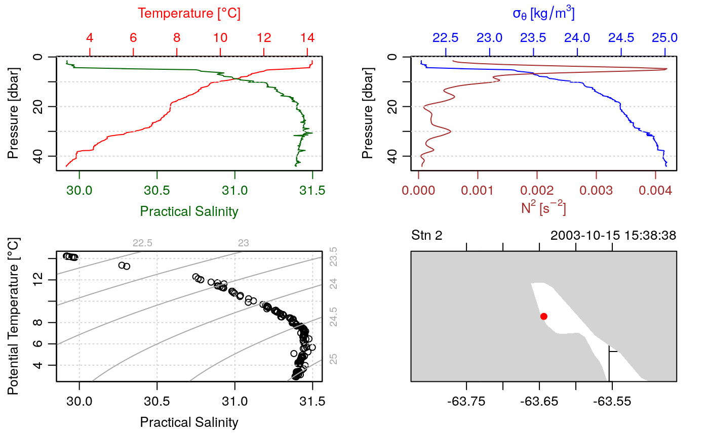
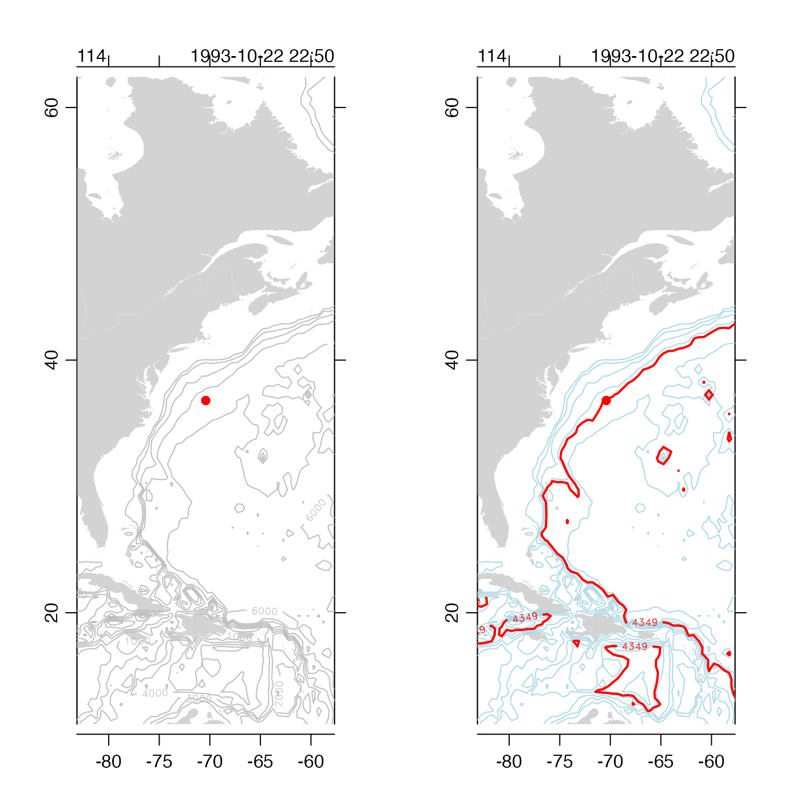

Plot CTD data in any of many different ways. In many cases, the best choice is to use default values for all parameters other than the first. This yields a 4-panel plot that displays a basic overview of the data, with a combined profile of salinity and temperature at the top left, a combined plot of density and the square of buoyancy frequency at top right, a TS diagram at bottom left, and a map at bottom right.
# S4 method for ctd
plot(
x,
which,
col = par("fg"),
fill,
borderCoastline = NA,
colCoastline = "lightgray",
eos = getOption("oceEOS", default = "gsw"),
ref.lat = NaN,
ref.lon = NaN,
grid = TRUE,
coastline = "best",
Slim,
Clim,
Tlim,
plim,
densitylim,
N2lim,
Rrholim,
dpdtlim,
timelim,
drawIsobaths = FALSE,
clongitude,
clatitude,
span,
showHemi = TRUE,
lonlabels = TRUE,
latlabels = TRUE,
latlon.pch = 20,
latlon.cex = 1.5,
latlon.col = "red",
projection = NULL,
cex = 1,
cex.axis = par("cex.axis"),
pch = 1,
useSmoothScatter = FALSE,
df,
keepNA = FALSE,
type,
mgp = getOption("oceMgp"),
mar = c(mgp[1] + 1.5, mgp[1] + 1.5, mgp[1] + 1.5, mgp[1] + 1),
inset = FALSE,
add = FALSE,
debug = getOption("oceDebug"),
...
)a ctd object.
a numeric or character vector specifying desired plot types. If
which is not supplied, a default will be used. This default depends on
deploymentType in the metadata slot of x. If deploymentType is
"profile" or missing, then which defaults to c(1,2,3,5). If
deploymentType is "moored" or "thermosalinograph" then which defaults
to c(30, 3, 31, 5). Finally, if deploymentType is towyo then which
defaults to c(30, 31, 32, 3).
The details of individual which values are as follows. Some of the entries
refer to the EOS (equation of state for seawater), which may either "gsw"
for the modern Gibbs Seawater system, or "unesco" for the older UNESCO
system. The EOS may be set with the eos argument to plot,ctd-method() or
by using options(), with options(oceEOS="unesco") or
options(oceEOS="unesco"). The default EOS is "gsw".
which=1 or which="salinity+temperature" gives a combined profile of
temperature and salinity. If the EOS is "gsw" then Conservative
Temperature and Absolute Salinity are shown; otherwise in-situ temperature
and practical salinity are shown.
which=2 or which="density+N2" gives a combined profile of density
anomaly, computed with swSigma0(), along with the square of the buoyancy
frequency, computed with swN2(). The eos parameter is passed
to each of these functions, so the desired EOS is used.
which=3 or which="TS" gives a TS plot. If the EOS is "gsw", T is
Conservative Temperature and S is Absolute Salinity; otherwise, they are
in-situ temperature and practical salinity, respectively.
which=4 or which="text" gives a textual summary of
some aspects of the data.
which=5 or which="map" gives a map plotted with
plot,coastline-method(), with a dot for the station location. Notes near
the top boundary of the map give the station number, the sampling date, and
the name of the chief scientist, if these are known. Note that the longitude
will be converted to a value between -180 and 180 before plotting. (See also
notes about span.)
which=5.1 as for which=5, except that the file name
is drawn above the map.
which=6 or which="density+dpdt" gives a profile of density and
\(dP/dt\), which is useful for evaluating whether the instrument is
dropping properly through the water column. If the EOS is "gsw" then
\(\sigma_0\) is shown; otherwise,
\(\sigma_\theta\) is shown.
which=7 or which="density+time" gives a profile of density and time.
which=8 or which="index" gives a profile of index number, which can
provide useful information for trimming with ctdTrim().
which=9 or which="salinity" gives a profile of Absolute
Salinity if the EOS is "gsw", or practical salinity otherwise.
which=10 or which="temperature" gives a profile
of Conservative Temperature if the EOS is "gsw", or
in-situ temperature otherwise.
which=11 or which="density" gives a profile
of density as computed with swRho(), to which the eos
parameter is passed.
which=12 or which="N2" gives an \(N^2\) profile.
which=13 or which="spice" gives a spiciness profile.
which=14 or which="tritium" gives a tritium profile.
which=15 or which="Rrho" gives a diffusive-case density
ratio profile.
which=16 or which="RrhoSF" gives a salt-finger case
density ratio profile.
which=17 or which="conductivity" gives a conductivity profile.
which=20 or which="CT" gives a profile of Conservative Temperature.
which=21 or which="SA" gives a profile of Absolute Salinity.
which=30 or which="Sts" gives a time series of Salinity Absolute
Salinity if the EOS is "gsw" or practical salinity otherwise.
which=31 or which="Tts" gives a time series of Conservative Temperature
if the EOS is "gsw" or in-situ temperature otherwise.
which=32 or which="pts" gives a time series of pressure
which=33 or which="rhots" gives a time series of density anomaly,
\(\sigma_0\) if the EOS is "gsw"
or \(\sigma_\theta\) otherwise.
otherwise, which is interpreted as a character value to be checked
against the data and dataDerived fields returned by x[["?"]. If a match
is found then a profile of the corresponding quantity is plotted. If there
is no match, an error is reported.
color of lines or symbols.
a legacy parameter that will be permitted only temporarily; see “History”.
color of coastlines and international borders, passed
to plot,coastline-method() if a map is included in which.
fill color of coastlines and international borders, passed
to plot,coastline-method() if a map is included in which. Set to
NULL to avoid filling.
character value indicating the equation of state to be used, either
"unesco" or "gsw". The default is to use a value stored with
options() as e.g. options(oceEOS="unesco").
latitude of reference point for distance calculation. The permitted range is -90 to 90.
longitude of reference point for distance calculation. The permitted range is -180 to 180.
logical value indicating whether to draw a grid on the plot.
a specification of the coastline to be used for
which="map". This may be a coastline object, whether built-in or
supplied by the user, or a character string. If the later, it may be the
name of a built-in coastline ("coastlineWorld",
"coastlineWorldFine", or
"coastlineWorldCoarse"), or "best", to choose
a suitable coastline for the locale, or "none" to prevent
the drawing of a coastline. There is a speed penalty for providing
coastline as a character string, because it forces
plot,coastline-method() to load it on every call. So, if
plot,coastline-method() is to be called several times for a given
coastline, it makes sense to load it in before the first call, and to
supply the object as an argument, as opposed to the name of the object.
optional numeric vectors of length 2, that give axis limits for salinity, conductivity, temperature, pressure, the square of buoyancy frequency, density ratio, dp/dt, and time, respectively.
logical value indicating whether to draw depth contours on
maps, in addition to the coastline. The argument has no effect except
for panels in which the value of which equals "map" or
the equivalent numerical code, 5. If drawIsobaths is
FALSE, then no contours are drawn. If drawIsobaths
is TRUE, then contours are selected automatically,
using pretty(c(0,300)) if the station depth is
under 100m or pretty(c(0,5500)) otherwise.
If drawIsobaths is a numerical vector,
then the indicated depths are drawn. For plots drawn with projection
set to NULL, the contours are added with contour()
and otherwise mapContour() is used. To customize
the resultant contours, e.g. setting particular line types or colors,
users should call these functions directly (see e.g. Example 2).
controls for the map area view,
used only if which="map".
clongitude and clatitude specify the centre of the view, and
span specifies the approximate extend of the view, in
kilometres. (If span is not given, it is be determined as a small
multiple of the distance to the nearest point of land, in an attempt to show
the station in familiar geographical context.)
controls for axis labelling, used only if which="map".
showHemi is logical value indicating whether to show hemisphere in axis tick
labels. lonlabels and latlabels are numeric and character values that control the
axis labelling.
controls for station location,
used only if which="map". latlon.pch sets the symbol code,
latlon.cex sets the character expansion
factor, and latlon.col sets the colour.
controls the map projection (if any), and ignored unless
which="map". The possibilities are as follows. (1) If projection=NULL
(the default) then no projection will be used; the map will simply show
longitude and latitude in a Cartesian frame, scaled to retain shapes at the
centre. (2) If projection="automatic"then either a Mercator or Stereographic projection will be used, depending on whether the CTD station is within 70 degrees of the equator or at higher latitudes. (3) Ifprojection` is a string in the format used by mapPlot(), then it is is
passed to that function.
size to be used for plot symbols (see par()).
size factor for axis labels (see par()).
code for plotting symbol (see par()).
logical value indicating whether to
use smoothScatter() instead of plot() to draw the plot.
optional numeric argument that is ignored except for plotting buoyancy
frequency; in that case, it is passed to swN2().
logical value indicating whether NA values
will yield breaks in lines drawn if type is b, l, or o.
The default value is FALSE. Setting keepNA to TRUE
strung together into one ctd object, which otherwise
would have extraneous lines joining the deepest point in one
profile to the shallowest in the next profile.
the type of plot to draw, using the same scheme as
plot(). If supplied, this is increased to be the
same length as which, if necessary, and then supplied to
each of the individual plot calls. If it is not supplied,
then those plot calls use defaults (e.g. using a line for
plotProfile(), using dots for plotTS(),
etc).
three-element numerical vector specifying axis-label geometry,
passed to par().
The default establishes tighter margins than in the usual R setup.
four-element numerical vector specifying margin geometry,
passed to par().
The default establishes tighter margins than in the usual R setup.
Note that the value of mar is ignored for the map panel
of multi-panel maps; instead, the present value of
par("mar") is used, which in the default call will
make the map plot region equal that of the previously-drawn
profiles and TS plot.
logical value indicating whether this
function is being used as an inset. The
effect is to prevent the present function from adjusting margins, which is
necessary because margin adjustment is the basis for the method used by
plotInset().
logical value indicating whether to add to an existing plot. This
only works if length(which)=1, and it will yield odd results if the
value of which does not match that in the previous plots.
an integer specifying whether debugging information is
to be printed during the processing. This is a general parameter that
is used by many oce functions. Generally, setting debug=0
turns off the printing, while higher values suggest that more information
be printed. If one function calls another, it usually reduces the value of
debug first, so that a user can often obtain deeper debugging
by specifying higher debug values.
optional arguments passed to plotting functions.
The
default values of which and other arguments are chosen to be useful
for quick overviews of data. However, for detailed work it is common
to call the present function with just a single value of which, e.g.
with four calls to get four panels. The advantage of this is that it provides
much more control over the display, and also it permits the addition of extra
display elements (lines, points, margin notes, etc.) to the individual panels.
Note that panels that draw more than one curve (e.g. which="salinity+temperature"
draws temperature and salinity profiles in one graph), the value of par("usr")
is established by the second profile to have been drawn. Some experimentation will
reveal what this profile is, for each permitted which case, although
it seems unlikely that this will help much ... the simple fact is that drawing two
profiles in one graph is useful for a quick overview, but not useful for e.g. interactive
analysis with locator() to flag bad data, etc.
January 2022:
Add ability to profile anything stored in the data slot, and anything
that can be computed from information in that slot. The list of
possibilities is found by examining the data and dataDerived elements
of x[["?"]].
Drop the lonlim and latlim parameters, marked for removal in 2014;
use clongitude, clatitude and span instead (see
plot,coastline-method()).
February 2016:
Drop the fill parameter for land colour; use colCoastline instead.
Add the borderCoastline argument, to control the colour of coastlines
and international boundaries.
The documentation for ctd explains the structure of CTD objects, and also outlines the other functions dealing with them.
Other functions that plot oce data:
download.amsr(),
plot,adp-method,
plot,adv-method,
plot,amsr-method,
plot,argo-method,
plot,bremen-method,
plot,cm-method,
plot,coastline-method,
plot,gps-method,
plot,ladp-method,
plot,landsat-method,
plot,lisst-method,
plot,lobo-method,
plot,met-method,
plot,odf-method,
plot,rsk-method,
plot,satellite-method,
plot,sealevel-method,
plot,section-method,
plot,tidem-method,
plot,topo-method,
plot,windrose-method,
plot,xbt-method,
plotProfile(),
plotScan(),
plotTS(),
tidem-class
Other things related to ctd data:
CTD_BCD2014666_008_1_DN.ODF.gz,
[[,ctd-method,
[[<-,ctd-method,
as.ctd(),
cnvName2oceName(),
ctd-class,
ctd.cnv,
ctdDecimate(),
ctdFindProfiles(),
ctdRaw,
ctdRepair(),
ctdTrim(),
ctd_aml.csv,
ctd,
d200321-001.ctd,
d201211_0011.cnv,
handleFlags,ctd-method,
initialize,ctd-method,
initializeFlagScheme,ctd-method,
oceNames2whpNames(),
oceUnits2whpUnits(),
plotProfile(),
plotScan(),
plotTS(),
read.ctd.itp(),
read.ctd.odf(),
read.ctd.odv(),
read.ctd.sbe(),
read.ctd.woce.other(),
read.ctd.woce(),
read.ctd(),
setFlags,ctd-method,
subset,ctd-method,
summary,ctd-method,
woceNames2oceNames(),
woceUnit2oceUnit(),
write.ctd()
## 1. simple plot
library(oce)
data(ctd)
plot(ctd)

## 2. how to customize depth contours
par(mfrow=c(1,2))
data(section)
stn <- section[["station", 105]]
plot(stn, which="map", drawIsobaths=TRUE)
plot(stn, which="map")
data(topoWorld)
tlon <- topoWorld[["longitude"]]
tlat <- topoWorld[["latitude"]]
tdep <- -topoWorld[["z"]]
contour(tlon, tlat, tdep, drawlabels=FALSE,
levels=seq(1000,6000,1000), col='lightblue', add=TRUE)
contour(tlon, tlat, tdep, vfont=c("sans serif", "bold"),
levels=stn[['waterDepth']], col='red', lwd=2, add=TRUE)
